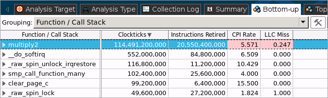
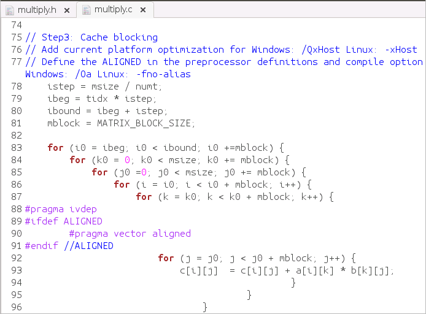

You got a significant performance boost by optimizing the memory
access for the
multiply1
function. According to the data provided in the
Summary window for your updated result, r001ge, you still have
high CPI rate and
LLC MissBack-End Bound issues. You can try to
optimize your code further following the steps below:
You got a significant performance boost by optimizing the memory
access for the
multiply1
function. According to the data provided in the
Summary window for your updated result, r001ge, you still have
high CPI rate and
LLC MissBack-End Bound issues. You can try to
optimize your code further following the steps below:
Analyze Results after Optimization
To get more details on the issues that still affect the performance of the matrix application, switch to the Bottom-up window in the Hardware Issues viewpoint:

You see that the multiply2 function (in fact, updated multiply1 function) is still a hotspot. Double-click this function to view the source code and click both the Source and Assembly buttons on the toolbar to enable the Source and Assembly panes.

In the Source pane, the VTune Amplifier highlights line 66 that took the highest number of Clockticks samples. This is again the section where matrices are multiplied. The Assembly pane is automatically synchronized with the Source pane. It highlights the basic blocks corresponding to the code line highlighted in the Source pane. If you compiled the application with the Intel® Compiler, you can see that highlighted block 20 includes vectorization instructions added after your previous optimization. All vectorization instructions have the p (packed) postfix (for example, mulpdx). You may use the /Qvec-report3 option of the Intel compiler to generate the compiler optimization report and see which cycles were not vectorized and why. For more details, see the Intel compiler documentation.
Use More Advanced Algorithms
Open the multiply.h file from the Source Files of the matrix project.
In line 36, replace the multiply2 function name with the multiply3 function.
This function enables uploading the matrix data by blocks.

Save the files and rebuild the project.
Verify Optimization
Re-run the General Exploration analysis: From the product menu, select New > General Exploration Analysis.
VTune Amplifier reruns the General Exploration analysis for the updated matrix target and creates a new result, r002ge, that opens automatically.
In the r002ge result, click the Summary tab to see the Elapsed time value for the optimized code:

You see that the Elapsed time has reduced significantly: from 10.032 seconds to 1.783 seconds but one of hardware issues identified in the previous run, LLC Miss, stayed. This means that there is more room for improvement and you can try other, more effective, mechanisms of matrix multiplication.
Key Terms
Optimization Notice |
|---|
Intel's compilers may or may not optimize to the same degree for non-Intel microprocessors for optimizations that are not unique to Intel microprocessors. These optimizations include SSE2, SSE3, and SSSE3 instruction sets and other optimizations. Intel does not guarantee the availability, functionality, or effectiveness of any optimization on microprocessors not manufactured by Intel. Microprocessor-dependent optimizations in this product are intended for use with Intel microprocessors. Certain optimizations not specific to Intel microarchitecture are reserved for Intel microprocessors. Please refer to the applicable product User and Reference Guides for more information regarding the specific instruction sets covered by this notice. Notice revision #20110804 |